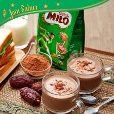
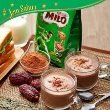

- 1 paket MILO® 3IN1
- 1 sudu kecil serbuk kopi NESCAFÉ® (pilihan)
- Air panas
- Susu rendah lemak (pilihan)
- 1 cawan ketulan ais
- 1/8 sudu teh gula
- 1/4 sudu teh garam
- 1/4 sudu mixed italian herbs (parsley, Oregano, basil, thyme)
- 1 bawang Holland (hiris)
- 2 helai daun bawang (hiris)

Cara -Cara
- Masukkan 1 paket MILO® 3IN1 dan serbuk kopi ke dalam cawan
- Tuangkan air panas secukupnya dan kacau hingga larut
- Tambah susu rendah lemak jika suka
- Masukkan ketulan ais dan hidangkan.

Cara -Cara
-
